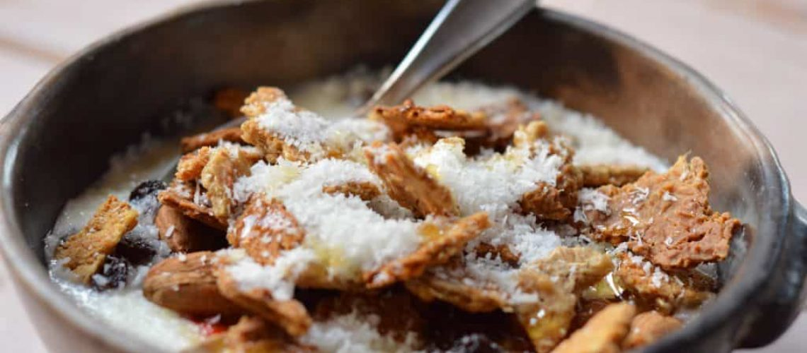

Crocante de Avena

Descripción:
Galleta crocante de avena fermentada al horno.
Ingredientes:
- 1 taza de Avena
- Media taza de Agua
- 1 cucharada de Kéfir o Vinagre
- 1 cucharada de Harina de Centeno
- 1 cucharadita de salmuera
Instrucciones:
- Remojar todo menos la salmuera un mínimo de 12 horas a temperatura ambiente.
- Ponerle la salmuera.
- Aceitar un placa para el horno.
- Hornear a 200 grados centígrados 20 minutos aproximadamente.
- Dar vuelta y dejar en el horno 10 minutos más.